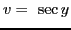
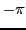
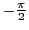
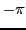
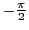

Next: Differentiation of Up: Rules for differentiating standard Previous: Differentiation of Contents Index
Let
; then
.
This function is defined for all values of  except those lying between
except those lying between  and
and  ,
and is seen to be many-valued. To make the function single-valued,
,
and is seen to be many-valued. To make the function single-valued,  is taken as
the arc of smallest numerical value whose secant is
is taken as
the arc of smallest numerical value whose secant is  . This means that if
. This means that if  is positive,
we confine ourselves to points on arc
is positive,
we confine ourselves to points on arc  (Figure 5.9),
(Figure 5.9),  taking on
values between 0 and
taking on
values between 0 and
 (0 may be included); and if
(0 may be included); and if  is negative,
we confine ourselves to points on arc ,
is negative,
we confine ourselves to points on arc ,  taking on values between  and
 ( may be included).
taking on values between  and
 ( may be included).
Differentiating with respect to  by IV,
;
therefore
, by (5.2). But since
by IV,
;
therefore
, by (5.2). But since  is a function of
is a function of  , this may be substituted in the formula
, this may be substituted in the formula
 , by (5.1).giving
, by (5.1).giving